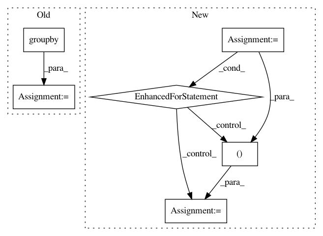

9def69a805132ff7549744b5b30a2fa7531fa405,tmtoolkit/preprocess/_tmpreproc.py,TMPreproc,load_tokens_dataframe,#TMPreproc#Any#,263
Before Change
// convert big dataframe to dict of document token dicts to be used in load_tokens
tokens = {}
for dl, doc_df in tokendf.groupby(level=0):
doc_df = doc_df.reset_index()
doc_df = doc_df.loc[:, doc_df.columns.difference(ind_names)]
tokens[dl] = doc_df
return self.load_tokens(tokens)
def __copy__(self):
After Change
// convert big dataframe to dict of document token dicts to be used in load_tokens
tokens = {}
for dl in dt.unique(tokendf[:, dt.f.doc]).to_list()[0]:
doc_df = tokendf[dt.f.doc == dl, :]
colnames = list(doc_df.names)
colnames.pop(colnames.index("doc"))
tokens[dl] = doc_df[:, colnames]
return self.load_tokens(tokens)
def __copy__(self):
In pattern: SUPERPATTERN
Frequency: 3
Non-data size: 6
Instances
Project Name: WZBSocialScienceCenter/tmtoolkit
Commit Name: 9def69a805132ff7549744b5b30a2fa7531fa405
Time: 2019-06-12
Author: markus.konrad@wzb.eu
File Name: tmtoolkit/preprocess/_tmpreproc.py
Class Name: TMPreproc
Method Name: load_tokens_dataframe
Project Name: has2k1/plotnine
Commit Name: 190065554d8905884dff948e4bb655d431d7eec3
Time: 2015-04-20
Author: has2k1@gmail.com
File Name: ggplot/stats/stat.py
Class Name: stat
Method Name: _calculate_groups
Project Name: bokeh/bokeh
Commit Name: ce4cf57bd51148b0eeb6c4ddfb28605a5db9af15
Time: 2016-02-01
Author: bryanv@continuum.io
File Name: bokeh/core/compat/bokeh_renderer.py
Class Name: BokehRenderer
Method Name: close_figure